Ensuring user-friendliness was a top priority for us, especially considering the diverse range of freelancers, some of whom may not be tech-savvy. Many existing work management applications tend to be complex and overwhelming with numerous options. To address this, iCountTime was designed with a step-by-step introduction to each function, accompanied by visual cues like the timer's movement which aimed to create a more intuitive and lifelike experience for users.
X
iCountTime
UI/UX Design
Figma
iCountTime is a work management application designed for freelance professionals to help them with planning, tracking projects, managing work hours, and monitoring expenses. iCountTime focuses on enhancing the user experience with clear and interactive features and provides tools for effective project management.
I was part of developing hi-fi wireframes and interactive elements using Figma, while also conducting user research. Additionally, the application's prototype underwent multiple rounds of user testing to refine and optimize the designs for the best user experience.
Co-creators: Elin Tri, Alicia Liu

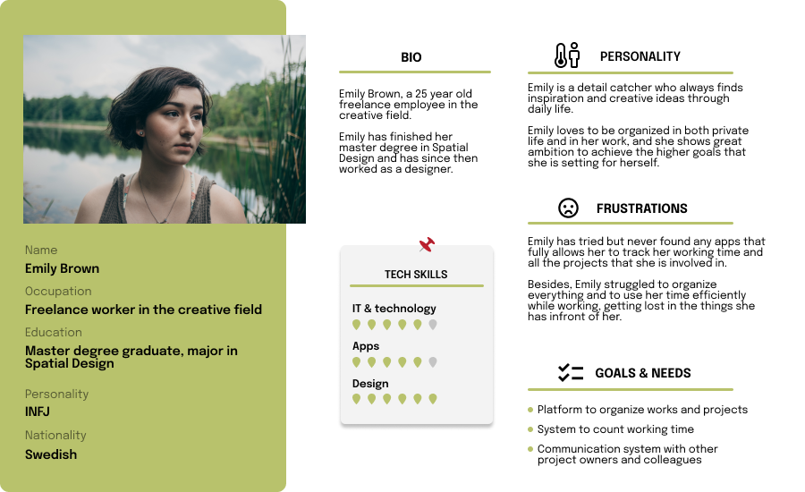
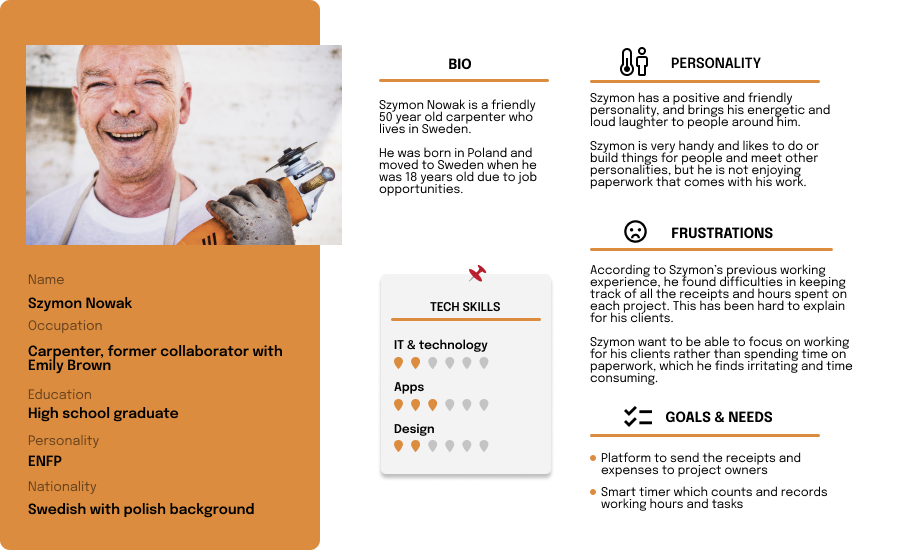
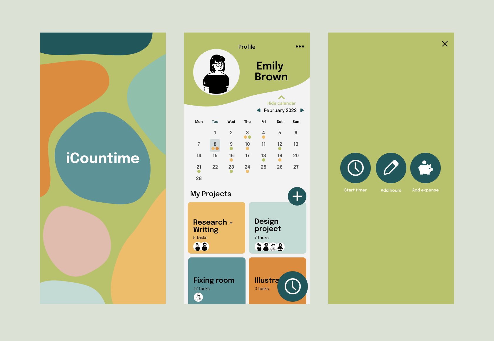
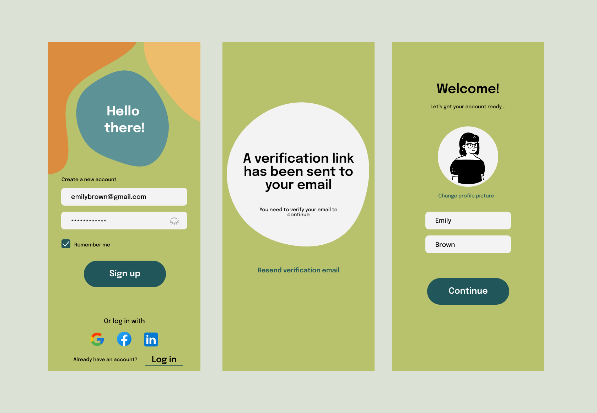
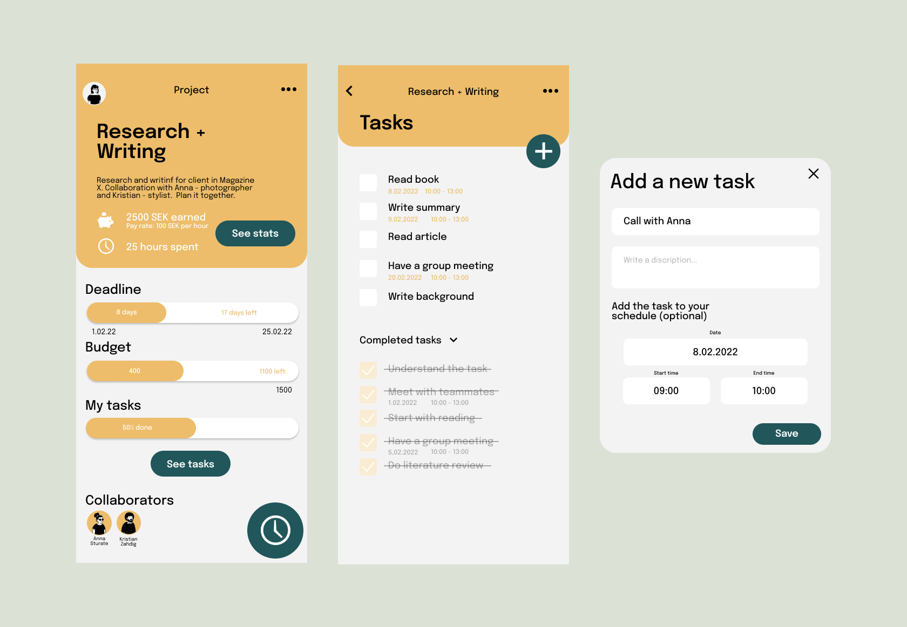
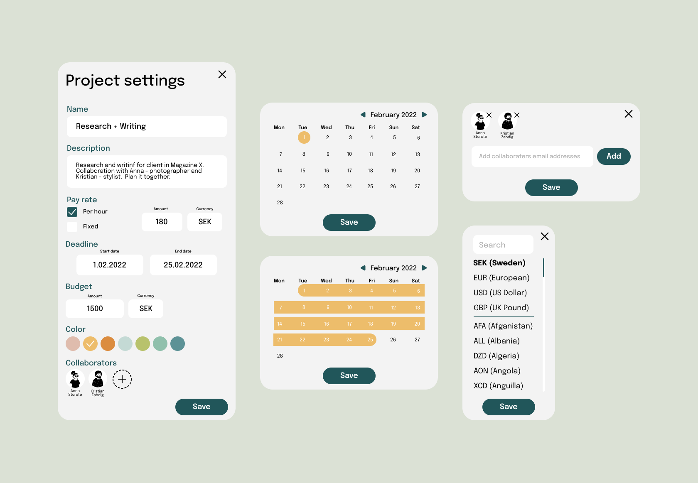
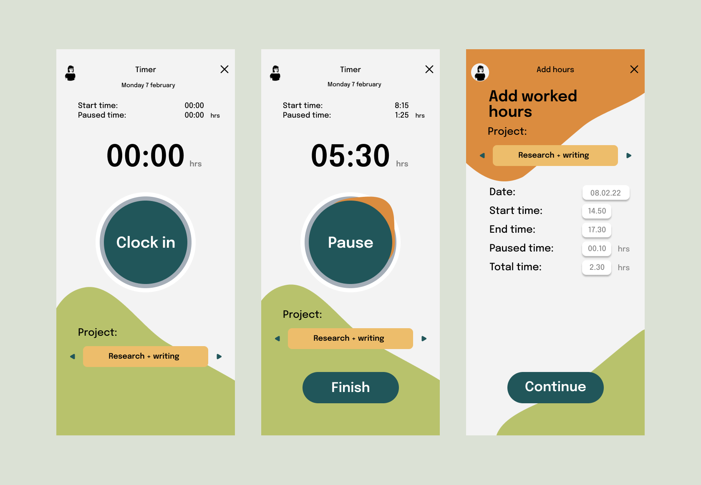
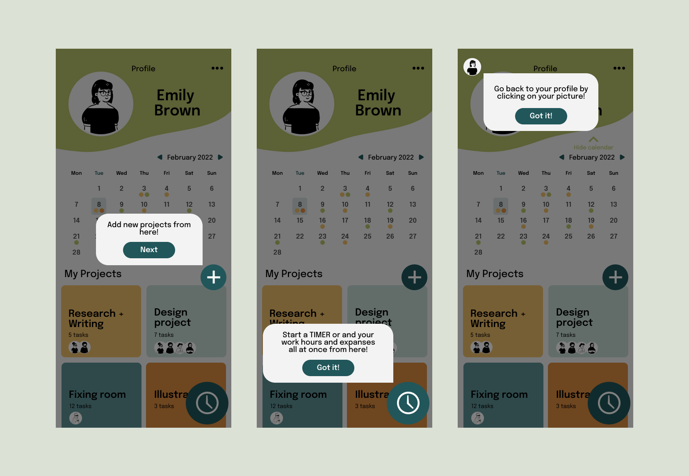
The HTA illustrates iCountTime's userflow.
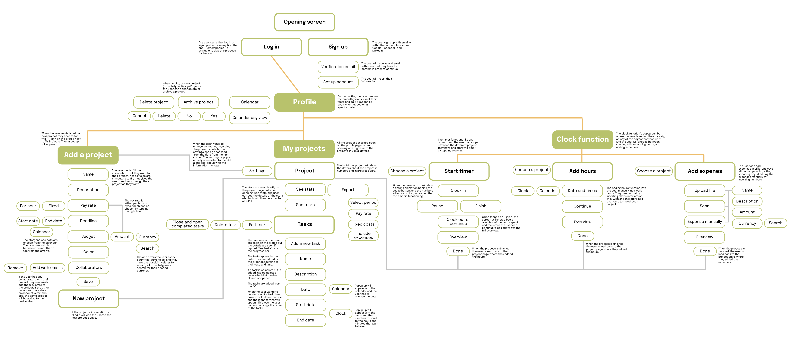
My team prioritized accessibility, particularly considering how colorblind individuals would perceive the application. We conducted testing with various colorblind filters and made significant adjustments to the initial design, ensuring accessibility for users of all types.
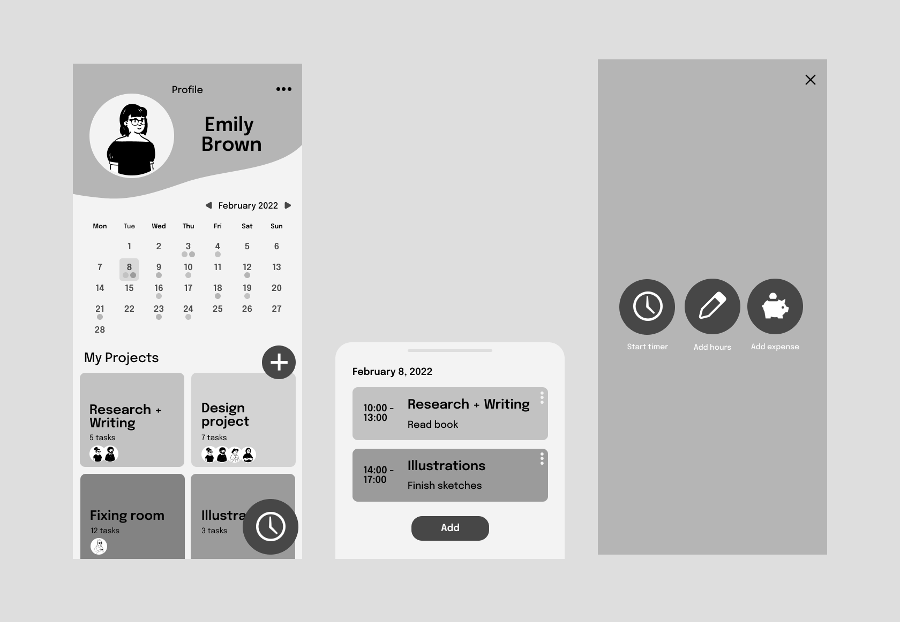
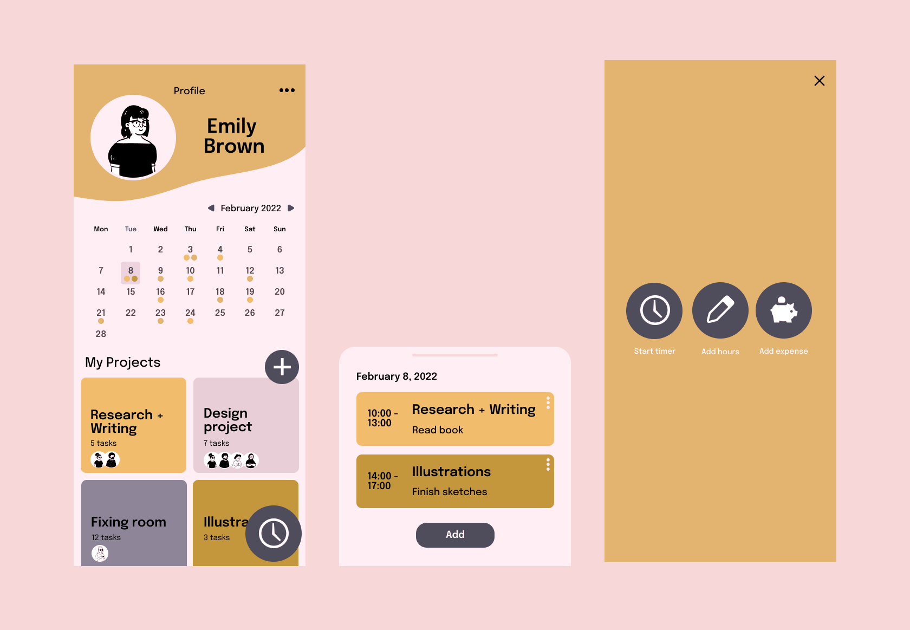
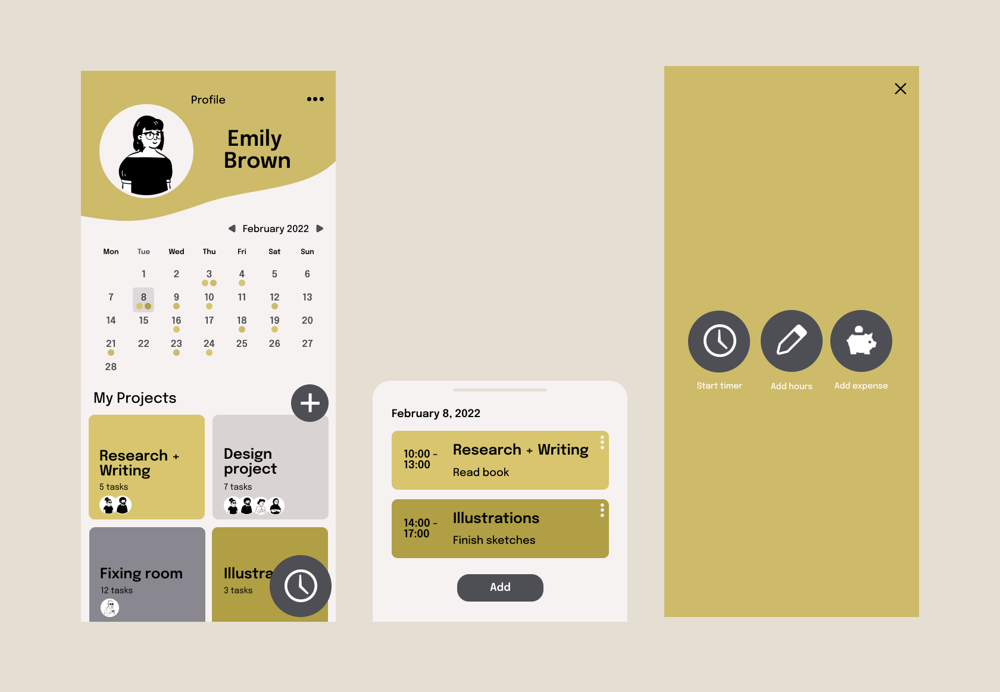
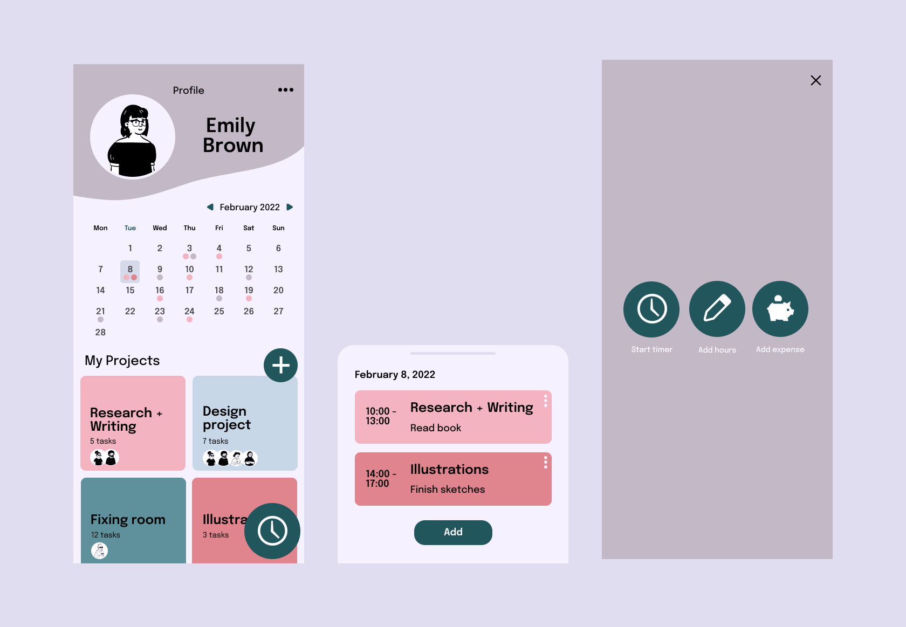